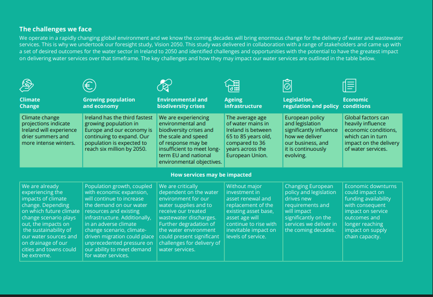

UISCE Éireann
UISCE Éireann
The corporate governance structure of Uisce Éireann has evolved to place sustainability at the very core of its operational mandate.
Renewable Energy Generation: The Biogas Opportunity To mitigate its Scope 2 emissions and reduce operational costs, Uisce Éireann is aggressively pursuing on-site renewable energy generation. The primary vector for this is the recovery of energy from wastewater sludge via anaerobic digestion.
The Circular Economy: Sludge Management Wastewater treatment is not just about cleaning water; it is a materials handling industry. The solids removed during treatment—sludge—represent a significant logistical and environmental challenge. Uisce Éireann’s National Wastewater Sludge Management Plan (NWSMP) sets out a standardized approach to ensuring this material is managed safely and sustainably.
Phosphorus Recovery at Ringsend: A pioneering example of circularity is the nutrient recovery facility at the Ringsend Wastewater Treatment Plant in Dublin. This facility uses technology to recover phosphorus from the treatment stream in the form of struvite (magnesium ammonium phosphate). Struvite is a high-grade, slow-release fertilizer. By harvesting it, Uisce Éireann not only produces a marketable product but also prevents the phosphorus from clogging pipes within the plant (a problem known as nuisance struvite), thereby improving operational reliability
The benefits of ICWs are manifold:
• Carbon Sequestration: The wetland vegetation and soil sequester carbon.
• Biodiversity: They create rich habitats for birds, amphibians, and insects.
• Low Energy: They operate largely on gravity flow and solar energy (via photosynthesis), requiring minimal electricity.
• Resilience: They are robust against fluctuating flows and require less maintenance than mechanical plants.
Case Study: Glaslough ICW, Co. Monaghan

The "First Fix Free" Scheme

A unique feature of the Irish sustainability strategy is the "First Fix Free" scheme. Recognizing that a significant volume of leakage occurs on the customer's private supply pipe (between the boundary box and the house), Uisce Éireann offers to repair these leaks for free. This policy is driven by data from smart meters, which can detect continuous flow patterns indicative of a leak. Since its introduction in 2015, this scheme has saved over 235 million litres of water per day—the equivalent of 2.9 million bathtubs.20 This collaborative approach incentivizes customers to report leaks without fear of incurring heavy repair costs.
The "Find and Fix" Methodology
Reducing leakage in a complex underground network is a forensic engineering challenge. Uisce Éireann employs a "Find and Fix" methodology that relies on a combination of technology and boots-on-the-ground repair crews.
District Metering Areas (DMAs): The network is segmented into small, discrete zones where the inflow is continuously metered. By analyzing the "minimum night flow" (when legitimate consumption is lowest, typically 2:00 AM – 4:00 AM), engineers can identify which zones have high leakage
Step Testing: This involves sequentially closing valves within a DMA to isolate sections of pipe and pinpoint the exact location of water loss
Through these methods, the utility has successfully reduced the national leakage rate to approximately 38% in 2024, with a target to reach 25% by 2030.6 In the Greater Dublin Area, where the supply-demand balance is tightest, leakage has been driven down to 32%
